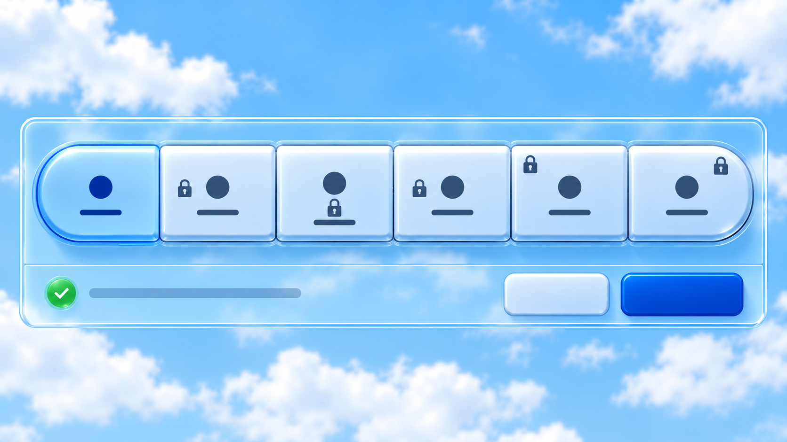
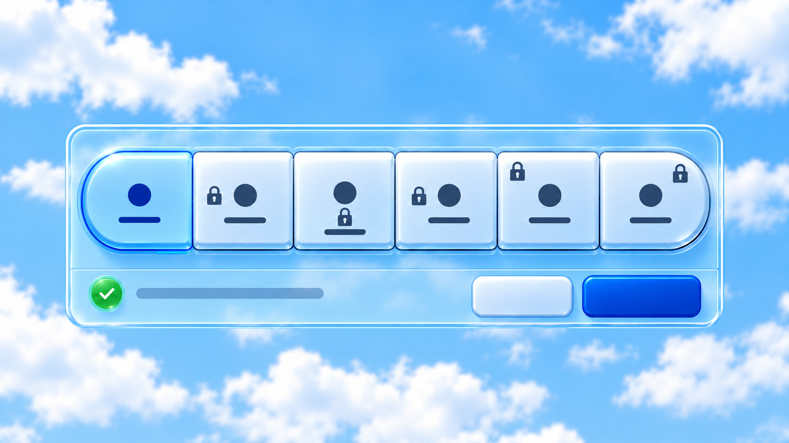
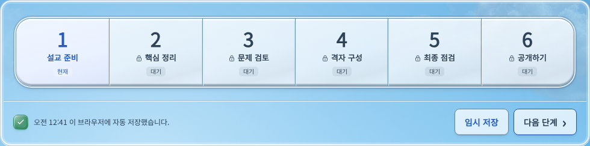
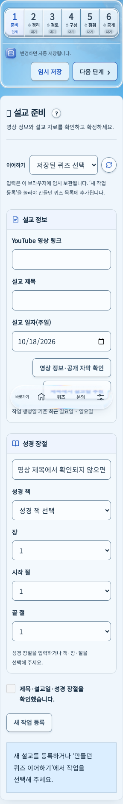
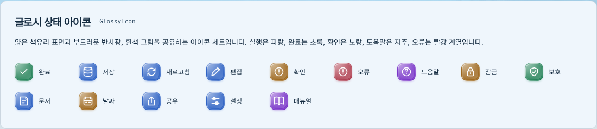
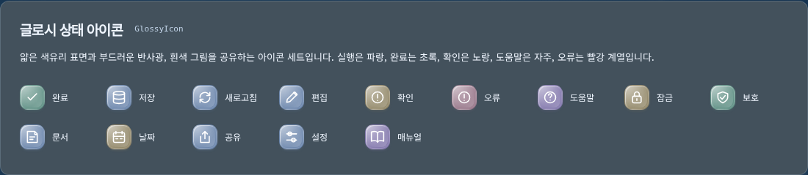
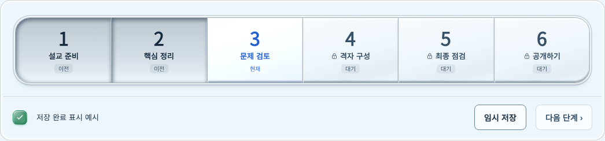

연결형 카세트 조작판
하나의 외곽 안에 여섯 키가 맞닿습니다. 양끝만 둥글게 처리하고, 가운데의 날카로운 광택 경계를 없애고 부드러운 대각선 반사광을 사용합니다. 마우스를 올리면 빛이 좌상단에서 우하단으로450ms 동안 한 번 지나갑니다. 이전 단계는 눌린 면이며 본문은 조작판과 분리됩니다.
기존 생성 시안 · 연결감 참고

생성 이미지 · 형태 참고입니다. 점과 막대는 실제 번호·문구가 들어갈 자리이며, 자물쇠의 정확한 위치와 실제 저장 상태는 아래 구현 화면을 확인하세요.
좁은 화면용 생성 시안

실제 저장 완료와 확정된 잠금 표시

실제 로컬 화면 · 독립 시험 브라우저의 등록 전 연습 입력을 자동 저장한 결과입니다. 새 DB 작업이나 실제 자료 변경은 없습니다.
사용자가 고른3번 배치로 통일했습니다. 모든 자물쇠는 단계 이름 왼쪽에 붙고, 자물쇠와 이름이 함께 가운데 정렬됩니다. 클릭할 때 진한 테두리가 생기지 않으며 키보드 초점은 유지합니다.

320px 실제 화면 · 여섯 키가 한 행이며 높이는64px입니다.
네 시간대의 실제 제작 화면
이전 단계의 눌림·현재 단계·잠금 상태를 같은 화면에서 비교합니다. 상단 미리보기를 누르면 전체 화면을 엽니다.
이어하기 안내 아래28px 간격을 확보했습니다. 설교 정보의 제목·입력·추천 버튼을 하나로 묶고, 성경 장절은 다음 소섹션에 놓았습니다.
공통 글로시 상태 아이콘
재질 참고: Anthony Gribben의 Glass Icon Exploration과 Icons8 Liquid Glass Color. 외부 아이콘을 복제·다운로드하지 않고 기존 그림과 의미색으로 직접 구현했습니다.
진한 원형 테두리와 반구 광택을 없애고 얇은 색유리와 부드러운 반사광을 공유합니다. 실행·저장, 완료, 확인, 도움말, 오류의 다섯 의미 색과 시간대 팔레트를 사용합니다. 갤러리에서 실제 부품 보기

밤의 아이콘 세트

작은 물음표와 입체 닫기 버튼
물음표 그림은22px, 누르는 영역은44px입니다. 그림만2px 아래로 내려 제목과의 시각적 높이를 맞췄습니다. 도움말·난이도 선택창·화면 확대의 닫기 버튼은 같은 부품을 사용합니다.
데스크톱·모바일의 도움말과 화면 예시
빛이 스치는 순간

움직임은 실제 갤러리에서 확인하세요. 모션 줄이기 설정에서는 정적인 밝기 변화만 사용합니다.
‘임시 저장’은 실제 저장과 연결됩니다. ‘다음 단계’는 진행 중인 자동 저장과 남은 편집의 저장을 마친 뒤 이동합니다. 등록 전 입력은 이 브라우저에만 보관하며 새 퀴즈는 등록할 때 생성합니다.
이전 독립 키 시안 보존본

검수 범위: 네 시간대 × 2560/1440/768/425/375/320px, 키보드·모달·저장 회귀. 실제 휴대폰의 검수와 자동 브라우저 검수는 구분합니다. 이미지는 누르면 원본 크기로 열립니다.